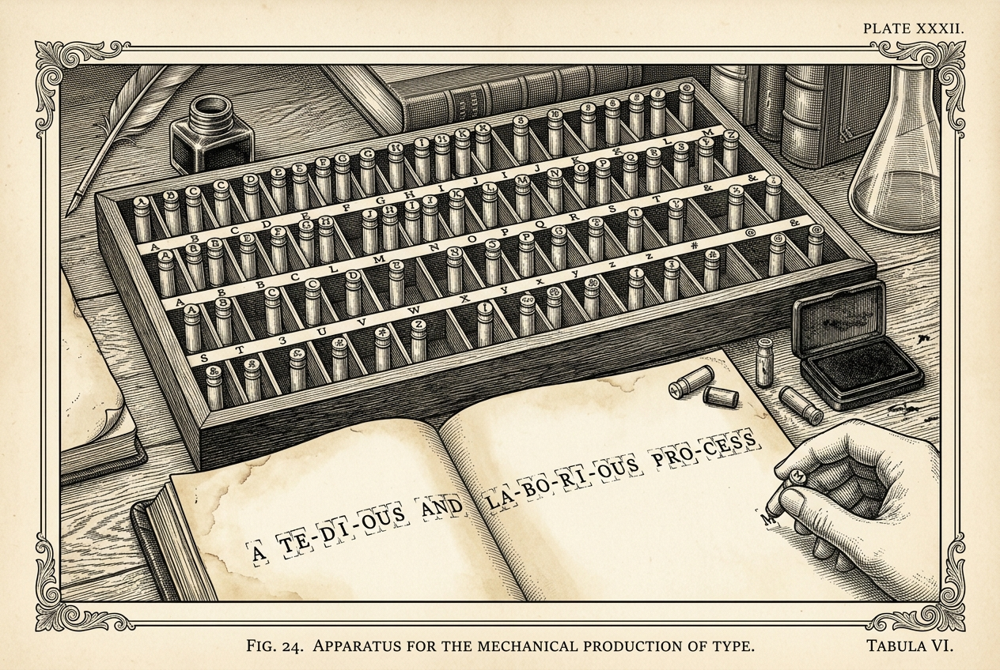

How a Sentence Becomes Numbers
Every calculation in Parts 1 to 8 starts from the same matrix: the
sentence I love LLMs, already turned into three rows of four numbers each.
This part is where those rows come from. It starts from eleven characters and finishes
with the matrix, and every step in between is a count you can do with a pencil.
By the end you'll be able to cut a sentence into tokens by hand. You'll be able to
say why LLMs comes out as two pieces rather than one. You'll be able to run the
loop that builds a vocabulary, counting every pair yourself. And you'll be able to say what a
token id is, and why the model in the paper this series works through —
Attention Is All You Need, Vaswani and others, 2017 — knows about 37,000
tokens rather than every word in two languages.
You can read this before Part 1 or after Part 8. It needs no weight matrices and no calculus, and nothing in Parts 1 to 8 depends on having read it. A few sentences borrow a fact from a later part, and each one hands you the fact on the spot, so you are never sent away to follow the argument. Section 0.1 borrows how wide a row is and what the model's twelve blocks weigh. Section 0.2 borrows one fact about how self-attention works. Section 0.3 borrows the size of the paper's shared English-to-German vocabulary. Section 0.5 borrows the size of the encoder stack, what the decoder needs its three markers for, and the fact that the numbers in \(\mathbf{E}\) are learned rather than chosen. Section 0.6 borrows what the model produces each time it writes.
The example this series runs on. The transformer translates I love LLMs into
J’aime les grands modèles. Both sentences appear here as text, before
anything has been multiplied by anything. Figure 1 is the whole part in one picture, and every stage in it is built by the section named beside it.
E. The word LLMs arrives as two tokens, which is what the rest of this part explains.0.1A row for every word, and none for the word you have not met
Open a paper dictionary and every word has its own entry. The obvious plan for a model is
the same one. Give every word a row of numbers, then turn a sentence into the rows of its
words. I love LLMs becomes three rows of four numbers,
3 × 4, and that is the matrix every later part starts
from.
intelligence, but a fixed box cannot hold a stamp for every word anyone might write.Think of a box of rubber stamps. Each stamp prints one piece of text, and you write a sentence by pressing stamps in order. How many times you press is how long the sentence is, and each press lands on one position. Now the trade-off, and it runs through this whole part. The box holds a fixed number of stamps, chosen in advance. Fill it with big stamps and each press prints a lot, so sentences come out short — but a fixed number of big stamps cannot cover everything anybody might write. Fill it with small stamps and nothing is ever unprintable, because you can spell anything out — but every sentence takes far more presses. You cannot have both. Figure 2 puts the two ends side by side.
Take the big end first — one stamp per whole word — and count what it costs.
Think for a moment A hundred thousand words is a modest English vocabulary — a desk dictionary holds more. The paper's base model has \(d_{\text{model}} = 512\), so each row is 512 numbers. How many numbers is the whole table?
The table holds \(100{,}000 \times 512 = 51{,}200{,}000\) numbers. The twelve blocks that do the work come to about 44 million between them. The lookup table alone would be the biggest thing in the model, and it would still leave sentences it cannot read.
The sentences it cannot read are the ones with a word you have not met. Your surname is probably not in any hundred-thousand-word list. Nor is a product name from last month, nor a word borrowed from another language, nor a typing mistake. Each of those arrives at a model with one row per word and finds nothing. The usual repair is a single row meaning unknown, shared by every word that is not in the table. That gives all of those words the same row of numbers. A translator that gives your surname and a typing mistake the same row has stopped translating and started guessing.
There is a third cost, and it is the one that decides the design. English writes
walk, walks, walked and walking. One
stamp per word buys four rows there, and the model has to learn separately, four times over,
that all four are about walking. French is worse: grand, grande,
grands and grandes are four rows for one adjective, and our own
sentence uses one of them. Figure 3 puts the three costs side by side.
So what is on the list does not have to be a whole word. Whatever is on it is called a token, and the list itself is the vocabulary — the same name Part 6, Section 6.4.1 already gave it. A token is often a whole word, but it does not have to be.
Key takeaway
- One row per word has three costs: the lookup table is larger than the rest of the model,
a word the table has never seen gets no row at all, and inflections like
walk/walks/walked/walkingeach waste a separate row. - The entries on the list do not have to be whole words. Whatever is on the list is called a token; the list itself is the vocabulary.
Try it (2 minutes): Take the last message you sent to anyone. Count the words that a fixed English list of 100,000 would not hold — names, abbreviations, typing mistakes, words from another language. In most real messages the count is not zero.
0.2A row for every character, and a sentence four times longer
Turn the plan over. Give every character a row instead of every word. The box
of stamps now holds letters: one for a, one for b, one for the
space. English text needs about a hundred of them once capitals, digits and punctuation are
counted. Our two sentences use only eighteen different characters between them.

That plan can never meet an unknown word. Your surname is made of letters the box already
holds, and so is a typing mistake, and so is LLMs. Nothing gets left out and
nothing collapses into a shared unknown row. The unknown-word problem from Section 0.1 is gone completely.
So count what it costs. I love LLMs is eleven characters, counting
the two spaces. A model that read three positions now reads eleven. And the cost
is worse than it sounds, because of how self-attention works: it compares every
position with every other position, building a square grid of scores. Every cell
of that grid costs one multiplication.
Think for a moment Three positions gave a grid of \(3 \times 3 = 9\) cells. (Part 1, Section 1.2.3 works one out in full.) How many cells do eleven positions give?
Eleven positions give \(11 \times 11 = 121\) cells, against nine. Figure 4 puts the two plans one above the other at the same scale, so you can see both effects at once.
Three words is a small case. A ten-word English sentence runs about fifty characters. Under one row per word the grid is \(10 \times 10 = 100\) cells; under one row per character it is \(50 \times 50 = 2{,}500\). Twenty-five times as much work, for the same sentence.
✗ Common mistake It is tempting to read the two plans as one expensive and one cheap, and to think characters are nearly free, because the table is tiny, but that is wrong. The cost did not go away; it moved. One row per word puts the cost in the lookup table, which is counted once. One row per character puts it in the score grid, and that grid is rebuilt from scratch for every sentence the model reads.
Key takeaway
- One token per character can never meet an unknown word, because every word is built from characters the vocabulary already holds.
- It makes the same sentence several times longer: eleven positions for
I love LLMsinstead of three. - Self-attention compares every position with every other position, so the grid grows with the square: nine cells become 121, and 100 cells become 2,500.
- The two plans sit at opposite ends of one trade-off between the size of the table and the length of the sentence. Neither end is a good place to be.
Try it (2 minutes): Take any sentence of about ten words. Count its words, then count its characters including the spaces. Square both numbers. The second square is the number of cells one self-attention step has to fill if the sentence is cut into characters.
0.3Let the text choose the pieces
We do not have to choose just one side. We can fill the box of stamps with single letters and with parts of words that appear often. This solves both problems at once. Common words get one stamp, so sentences stay short. Rare words get spelled out letter by letter, so no word is ever unknown.
How do we choose these parts? A human does not choose them. We let a computer count them. First, let us define two words:
- A piece is any part of a word. It starts as a single letter. Later, it becomes a longer group of letters.
- A piece becomes a token when it is added to the vocabulary — the same word Section 0.1 gave to whatever is on the list.
The computer finds the two pieces that sit next to each other most often, and glues them into one new piece. Then it counts again and glues again. Repeating that is what finds the exact pieces the text repeats most.
This method is called byte-pair encoding, or BPE. Before people used it for language, it was a way to make computer files smaller. In 2016, researchers used it to solve the problem of unknown words in translation. The Transformer model uses byte-pair encoding. You can find both papers in the footer.
The next two sections will walk you through exactly how BPE works:
- Section 0.3.1 explains the four steps of the BPE loop.
- Section 0.3.2 traces the first four merges step-by-step and explains how to break ties.
0.3.1Count the pairs, glue the winner, repeat
You need text to count. A corpus is a large collection of text used for counting. A real corpus has billions of words. Our corpus only has twelve words. We list them below with how many times each word appears. This lets you do the counting yourself.
Two things to know before you read the table:
- We invented the counts. The word
lovehas a count of 11 simply because we picked a small number to keep the arithmetic easy to follow on this page. - It mixes English and French. The model in this guide translates between them, so it uses one vocabulary for both languages. Real translation models usually do the same — the paper's English-to-German model shares one vocabulary of about 37,000 tokens between the two languages (Part 6, Section 6.4.4).
| word | times | word | times |
|---|---|---|---|
love | 11 | grand | 6 |
LLM | 12 | grands | 3 |
LLMs | 3 | modèle | 12 |
aime | 6 | modèles | 2 |
les | 14 | I | 4 |
J | 2 | ’ | 3 |
Here is the loop. Four steps, and the only arithmetic in it is addition.
- Cut every word into characters. For example,
lovebecomesl o v e. The vocabulary starts with the alphabet of the corpus. These are the eighteen letters that make up our twelve words:I J L M a d e g i l m n o r s v è ’. The space is not one of them, because we remove spaces before we count. - Count every pair of pieces. Walk through each word. Look at every pair of
pieces that sit next to each other. Give that pair the word's count. Add up the counts
for all twelve words. For example, the pair
legets 14 fromles, 12 frommodèle, and 2 frommodèles. - Glue the winner. Find the pair with the highest total. Glue its two halves together into one new piece. Add this new piece to the vocabulary. Finally, go back through your text. Replace the two old pieces with the single new piece wherever they sit together.
- Do it again. Count again, glue again. Stop when the vocabulary reaches the size you want.
Notice one very important thing about these four steps: the vocabulary only grows. The original eighteen letters are still there at the end. This is why the model can always spell out an unknown word letter by letter.
0.3.2Four merges, counted by hand
Figure 5 runs the loop four times over that corpus. Each stage shows three things: every corpus word cut into the pieces it has now, the neighbouring pairs ranked by total, and the size of the vocabulary. Press play, or read the four stages below, which give the same numbers in words.
modèles row, where the token les ends up serving as the last three letters of a longer word.Merge 1: l and e (total 28). The pair l e appears in three words: les (14 times), modèle (12 times), and modèles (2 times). That adds up to 28. Nothing else comes close. The next best is e s with 16. So, we glue l and e into one token: le. Our vocabulary grows from 18 to 19 tokens.
Think for a moment Now thatleis one piece, the pairlesexists whereesused to be. Which two words hold this new pair, and what is its total count?
Merge 2: le and s (total 16). The answer to the question above is 16. The pair le s appears in les (14 times) and modèles (2 times). The next best pairs are L L and L M, both with a count of 15. Since 16 beats 15, we glue le and s to make the token les. Our vocabulary grows to 20 tokens. Notice that after just two steps, the computer has discovered a complete French word (les), without knowing any French!
Merges 3 and 4 continue the exact same way. The table below shows the winning pair for each step.
| merge | winner | total | from | vocabulary |
|---|---|---|---|---|
| 3 | L + L → LL | 15 | LLM 12, LLMs 3 | 20 → 21 |
| 4 | LL + M → LLM | 15 | LLM 12, LLMs 3 | 21 → 22 |
At Merge 3, we have a tie. Both L L and L M appear 15 times. Which one should we pick? Ties happen constantly in text, so we need a rule.
We cannot just pick randomly. The rule must be fixed. If the model splits the same sentence two different ways on two different days, it will fail. You must pick a tie-breaking rule and consistently stick to it.
Our rule here is: the pair that appears earliest in our corpus list wins. Reading left-to-right, L L appears before L M in the word LLM. So, L L wins Merge 3.
In Merge 4, the new pair LL M also has a count of 15, so it easily wins, giving us the token LLM. The remaining pair LLM s only appears 3 times, which is too low to win right now.
Key takeaway
- BPE learns by counting: It finds the most frequent pair of pieces, glues them into a new token, and repeats.
- Single characters stay forever: BPE only adds new tokens; it never deletes old ones. The original single characters always stay in the vocabulary, so the model can always spell out unknown words.
- Consistent tie-breaking is vital: Ties happen often. You must have a fixed rule to break them. If you break ties randomly, the model gets confused by different token lists for the same sentence.
Try it (3 minutes): Merges 5, 6 and 7 are mo, mod and
modè. Work out the total each of them had when it won, using only the
corpus table. All three should come to 14, and the two words that supply it are the same two
every time.
0.4The two sentences, cut up
In Section 0.3, we watched the computer build the first four tokens: le, les, LL, and LLM. What happens if we keep letting it run?
We let the loop run eighteen times over our mini-corpus, and then we stop it. The loop could keep
going: the pair LLM s is still sitting there with a count of 3.
But eighteen merges is enough for this page, and by then nine of our twelve words are a
single piece each. Here is the final list of all eighteen merges. The numbers 1
to 18 represent the exact step when the piece was created:
| Steps 1–6 | Steps 7–12 | Steps 13–18 |
|---|---|---|
Step 1: le | Step 7: modè | Step 13: gra |
Step 2: les | Step 8: modèle | Step 14: gran |
Step 3: LL | Step 9: lo | Step 15: grand |
Step 4: LLM | Step 10: lov | Step 16: ai |
Step 5: mo | Step 11: love | Step 17: aim |
Step 6: mod | Step 12: gr | Step 18: aime |
Are these 18 pieces the only tokens in our vocabulary? No. Remember that BPE never deletes old tokens. We started with 18 single characters (like a, d, e). We just added these 18 new merged pieces. So, our final vocabulary has exactly 36 tokens. Our token list is now finished and ready to use.
0.4.1The merge list is the tokeniser
We are done counting. The counting loop (Section 0.3) was only used to build the merge list. You only do this once, before you even start training the model.
Now, we switch to a different job: using the list. The model does this every time someone types a sentence.
| Phase 1: Building the list | Phase 2: Using the list | |
|---|---|---|
| When? | Only once | Every time a user types |
| Input | A massive corpus of text | One single sentence |
| Job | Count pairs and find the winners | Just follow the saved merge list |
| Counting? | Yes | No counting at all |
To use the list on a new sentence, we follow three steps:
- Cut the text at spaces and punctuation. Cutting first is called
pre-tokenising. This stops pieces from gluing across spaces. Without it, the
einlovemight glue to the space after it, creating a mixed token.I love LLMsbecomesI,love,LLMs.J’aime les grands modèlescomes apart into six rather than four, because the apostrophe is a cut point too. The six areJ,’,aime,les,grandsandmodèles. - Cut each one into characters, exactly as the loop started.
- Run down the merge list, first to last. Merge 1 is
lande. Look through the word for anlwith aneright after it, and glue every pair you find. Then do the same for merge 2, then merge 3, and on to merge 18. You never go back up the list.
The order guarantees the exact same result every time. LLMs meets
merge 3 before merge 4. This means everyone always gets LLM and s. Figure 6 runs the list over
I love LLMs, one merge per stage. It starts from nine characters rather than the
eleven Section 0.2 counted, because step one has already taken the two spaces out.
I love LLMs, one merge
per stage, with the five merges that touch these words listed on the right. Nine
characters become four tokens, and the only thing deciding the outcome is the order the
merges are read in.Here is what the list does to all nine of them.
| cut at spaces | after the 18 merges | tokens |
|---|---|---|
I | I | 1 |
love | love | 1 |
LLMs | LLM s | 2 |
J | J | 1 |
’ | ’ | 1 |
aime | aime | 1 |
les | les | 1 |
grands | grand s | 2 |
modèles | modè les | 2 |
So I love LLMs is four tokens for three words.
J’aime les grands modèles is eight tokens for four words:
J ’ aime les grand
s modè les.
Why did LLMs split into two tokens instead of staying as one? Look at the
counts. The pair LLM s appears only 3 times in our corpus, because
the only word that contains that pair is LLMs, and LLMs appears 3
times. Each round of BPE picks the pair with the highest count. So a pair with count 3 has
to wait until every pair with count 4 or higher has already been merged. We only ran 18
rounds, and there were still pairs with count 6 or higher being merged at the end. The pair
LLM s never reached the front of the line, so it was never
glued together.
grands split for the same reason, and at the same total of 3. So the plural
s is a token on its own, shared by both words. That is the fix for the third
cost in Section 0.1, where walk, walks, walked and
walking each wanted a row.
✗ Common mistake It is tempting to think BPE learns grammar, but that is wrong. It only counts characters:grandandscome apart because that pair is frequent, not becausesis a plural. BPE finds grammar boundaries by accident, because grammar rules naturally create frequent spelling patterns.
0.4.2A character the corpus never held
Earlier, we promised that the model would never see an unknown word. But our alphabet only has eighteen characters. If you type a German ü or a Chinese 字, the model will not recognise them. The unknown-word problem has become an unknown-character problem.
To fix this, we start one level below characters: with bytes. Computers store all text as bytes (numbers from 0 to 255). We use a system called UTF-8, which turns every character into one to four bytes. Plain English letters take one byte
each, è takes two, and the curly apostrophe in
J’aime takes three. Our French sentence is 25 characters and 28 bytes.
Start the alphabet at all 256 byte values instead of at the characters of a corpus, and the problem cannot recur. Every possible text, in every language, in every alphabet, is some sequence of bytes, and all 256 of them are already in the vocabulary. That choice is called byte-level byte-pair encoding. GPT-2 uses it.
? The questionèis two bytes, so byte-level BPE starts it as two separate pieces. Does that break the character in half? Yes, at the start, and only at the start. Those two bytes only ever appear together, because together they are that character. Their pair count is therefore the count ofèitself, which is high, so the loop glues them back into one piece in its first few rounds.
What changes in the loop? The counting does not change. Step one cuts into bytes rather than characters. Steps
two, three and four are word for word the same: count the neighbouring pairs, glue the most
frequent, repeat. What changes for you is the size of the arithmetic.
modèles starts as eight pieces rather than seven, and the curly apostrophe
in J’aime starts as three. Counting the pairs stops being something you
can do with a pencil. That is why this page counts characters and not bytes.
Key takeaway
- Building the merge list (Section 0.3) happens once and needs counting. Using it happens every time someone types a sentence and needs no counting at all: cut at spaces, cut into characters, then walk through the merge list in order.
- The merge list is always applied in the same fixed order. That is what makes the same sentence always produce the same tokens.
- A word stays whole only if its pair count was high enough to win a round.
LLMssplits intoLLMandsbecause the pairLLMsappears only 3 times, which was too low to ever win. - Byte-level BPE starts the alphabet at all 256 byte values instead of at a corpus's characters. That removes the unknown-character problem. The rest of the loop is identical.
Try it (2 minutes): Tokenise les modèles using only the merge list
above. You should get three tokens, and one of them should appear twice.
0.5A token id is a row number
Our vocabulary has 36 tokens. Number them from 0 to 35. This number is called a token id. It is just the token's place in the list. It has no special meaning, and nearby numbers do not mean the words are similar.
Order the 18 characters first, in the order Section 0.3.1 listed them, which takes ids 0
to 17. Then the 18 merges, in the order they were made, so merge \(k\) takes id
\(17 + k\). The four
tokens of I love LLMs then get ids 0, 28, 21 and 14, and you can check every
one against the alphabet in Section 0.3.1 and the merge list in Section 0.4. Counting from
0, I is character number 0 and s is character number 14, so those
are their ids. LLM is merge 4, so its id is \(17 + 4 = 21\), and
love is merge 11, so its id is \(17 + 11 = 28\). Figure 7 lays the whole
vocabulary out as one numbered strip.
I love LLMs pointing at their ids. An id is a place in this strip and carries no other meaning.0.5.1The three markers
We add three more tokens by hand. The counting process would never find them because they are not real text. The model uses them as special flags to control how it works. The first two are for the half of the model that writes the French sentence out, one word at a time — the decoder. The third has nothing to do with writing at all.
<start>means nothing written yet. The decoder needs a row to begin on before it has chosen a single French word. Part 6, Section 6.5.2 explains why the loop cannot start without it.<end>means the sentence is finished. Without it the decoder has no way to stop, because every run of the loop produces a word.<pad>means this position is filler. The marker lets sentences of different lengths sit in one rectangle of numbers, and Part 8, Section 8.5.1 is where it earns its place.
They are tokens like any other. Each gets a row and each gets an id. The model reads them and
can write them, exactly as it reads and writes love. The angle brackets are a writing
convention, so that you can tell a marker from a word on the page, and the only thing that
makes a marker special is that a person reading the output discards it.
Add the three, and this part's vocabulary is 39 tokens.
0.5.2The largest table in the model
The vocabulary is a list of token strings. The model cannot do arithmetic on strings, so it needs a table that turns each token into a row of numbers. That table is called \(\mathbf{E}\). It has one row per token and \(d_{\text{model}}\) numbers in each row. Here are four of its 39 rows, at the toy width \(d_{\text{model}} = 4\) that Parts 1 to 8 work with. The ids are the ones you worked out above; the four numbers in each row are made up, because nothing on this page computes them.
| id | token | \(\mathbf{E}\) row | |||
|---|---|---|---|---|---|
| 0 | I | 0.12 | −0.34 | 0.56 | 0.09 |
| 14 | s | −0.19 | 0.51 | 0.07 | −0.63 |
| 21 | LLM | 0.45 | 0.67 | −0.22 | 0.30 |
| 28 | love | −0.71 | 0.03 | 0.88 | 0.41 |
The numbers in each row are learned during training. Part 9, Section 9.9.1 moves one row of \(\mathbf{E}\) by hand, so you can see what learned means. Before training they are random; after training they carry meaning, but this part does not need to know what they are. All this part does is look them up.
Looking a token up means: take the token's id, go to that row of \(\mathbf{E}\), and
copy the row. If the sentence is I love LLMs (four tokens with ids 0, 28, 21,
14 in our full vocabulary), you copy four rows and stack them top to bottom. That stack is
\(\mathbf{X}\), the matrix Part 1 starts from. Figure 8 follows the whole path.
I love LLMs in four bands: eleven characters, nine pieces once the two spaces are cut away, four tokens after the merge list has run, four ids, then the rows those ids pull out of \(\mathbf{E}\). Every arrow here is a lookup or a substitution — nothing on this page is learned or multiplied.! One simplification, declared here
Figure 8 ends with four rows, because I love LLMs is four tokens
under the vocabulary this part built. Parts 1 to 8 give each word one row, so they work with three rows, and their \(\mathbf{E}\) has ten rows rather than 39 — seven words between the two sentences, plus the three markers. That is a simplification of the
same kind as leaving the positional encoding out of the worked arithmetic, and it keeps the
matrices small enough to multiply on paper. Everything those parts do would work the same way
with four rows and 39 tokens; every step would just be longer to write out.
Now the size. The paper's base model has \(d_{\text{model}} = 512\), and its English-to-German experiment shares a vocabulary of about 37,000 tokens between the two languages. So \(\mathbf{E}\) holds \(512 \times 37{,}000 = 18{,}944{,}000\) numbers. That is the largest single table the model actually has — smaller than the 51,200,000 Section 0.1 rejected, and bigger than any other single matrix in the model by a factor of about eighteen.
Byte-pair encoding brought that figure down to 18,944,000 for two languages at once, and removed the unknown-word problem while doing it. Both of those come from one decision. 37,000 is not a count of anything in either language; it is the number of merges the paper stopped at.
Key takeaway
- A token id is just a row number. It tells the model where to look in the table, but the number itself has no hidden meaning.
- \(\mathbf{E}\) is the table that turns tokens into numbers. It has one row for every token in the vocabulary. The model looks up a token's id, copies that row, and stacks the rows to build the input matrix \(\mathbf{X}\).
<start>,<end>and<pad>are added after the merges. Each gets its own id and its own row of \(\mathbf{E}\), exactly like a word. What the model later does with those rows is another matter: Part 8 masks<pad>out.- The size of the vocabulary (and therefore the size of \(\mathbf{E}\)) is a choice. You can stop BPE at any number of tokens. The original Transformer paper chose 37,000.
Try it (2 minutes): The vocabulary here is 36 tokens plus 3 markers. Work out how many numbers \(\mathbf{E}\) would hold at \(d_{\text{model}} = 512\), then say how many times larger the paper's table is. You should get 19,968, and the paper's is about 949 times that.
0.6Turning ids back into text
When the model writes its translation, each step produces one probability for every token in
the vocabulary. Part 6, Section
6.4.2 works one of those out, and Part 10 is about how a token gets chosen from them.
Picking one gives a token id. To show the answer to a person, we have to turn those ids back
into readable text. The first step is easy: we just look up each id in the vocabulary to get
its string. For example, the ids 0, 28, 21, 14 give us the pieces I,
love, LLM, s.
But when we try to put those pieces back into a sentence, we hit a problem. Where did the spaces go? Pre-tokenising threw
them away at the very beginning of the process, and nothing has held them since. If you just join the
four pieces, you get IloveLLMs.
Think for a moment How do we remember that a space goes beforelovebut not befores? The model only sees token ids, so the space must be inside the token itself.
We attach the space to the front of the token. So, ␣love becomes the token, not love. This makes joining easy: just stick the pieces together. Put the token strings end to end, and the spaces are already in the
right places. Figure 9 joins the four tokens both ways. Those space-carrying tokens would take ids of their own; the vocabulary this part built does not have them.
One important consequence for Part 6: when the model generates text, it generates one
token at a time, not one word at a time. For example, modèles is split
into modè and les, so the model takes two steps to write it.
Part 6 will pretend the model writes whole words, but that is just a simplification to keep
the arithmetic small.
Key takeaway
- To turn ids back to text, just look up the tokens in the vocabulary and stick them together.
- Since spaces are lost during pre-tokenising, the tokens themselves must carry the spaces
(for example,
␣love). - When the model writes text, it outputs one token at a time. This often means it writes pieces of words rather than whole words.
NextThe matrix Part 1 starts from
You now know how to take a sentence, chop it into tokens using a merge list, look up each token's row in \(\mathbf{E}\), and stack those rows together. That stack of rows is \(\mathbf{X}\). In Part 1, Section 1.2.1, \(\mathbf{X}\) is simply taken as given — but now you know exactly where it comes from.
One reading rule for everything that follows. Whenever Parts 1 to 8 say word, they actually mean token. They use word because their toy examples pretend every word is exactly one token, which keeps the arithmetic small. But in a real model, a single word can be split into many tokens. Just remember: every row is one token, every position is one token, and the vocabulary is just a list of tokens.
Part 1 is self-attention: where Q, K and V come from, and the whole formula worked
by hand on I love LLMs. It also says why the scores are divided by
\(\sqrt{d_k}\). Part 1, Section 1.2.1
works with the same matrix Section 0.5 has just built, and takes it as given.
Section 1.1 comes first, and is about why attention exists at all.